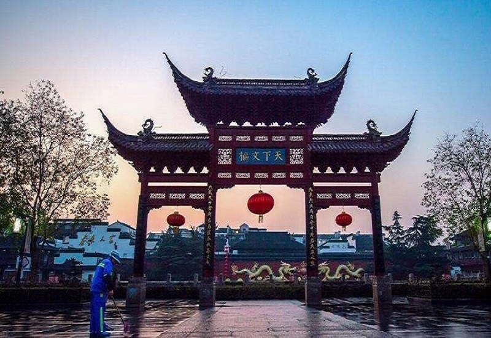
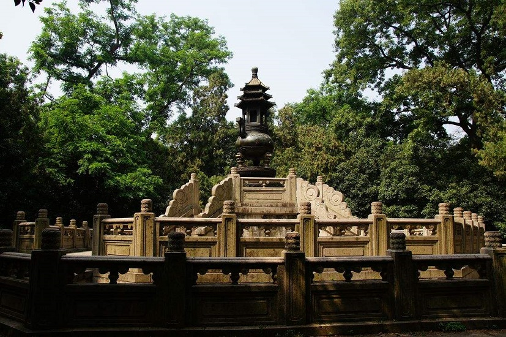
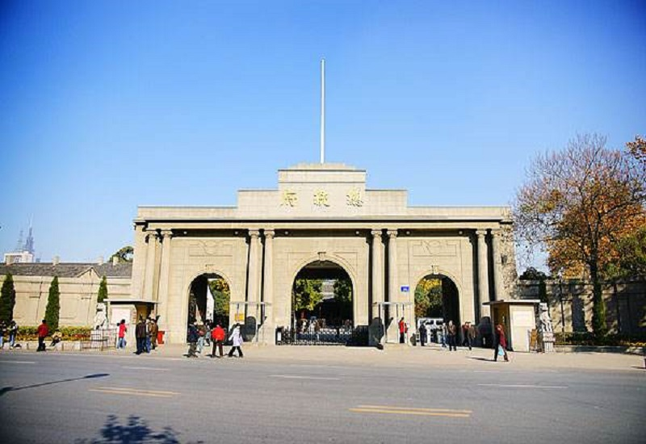

景点推荐
中山陵、明孝陵、总统府、夫子庙、秦淮河畔怀古、玄武湖、可以去栖霞山享受大自然的馈赠，待到春花灿烂之时，梅花山的梅花、鸡鸣寺外的樱花和高淳的油菜花……处处都是值得赏玩的。有一个地方是不得不去的，侵华日军南京大屠杀遇难同胞纪念馆，悲惨的历史不该被忘记，最后登上长江大桥，伴着夕阳，看看壮阔的长江，一定会让你颇有感触。
南工院 移动1813
孙晓萱版权所有

夫子庙
南京夫子庙位于南京市秦淮区秦淮河北岸贡院街、江南贡院以西，地处夫子庙秦淮风光带核心区，即南京孔庙、南京文庙、文宣王庙，为供奉祭祀孔子之地，是中国第一所国家最高学府、中国四大文庙之一，中国古代文化枢纽之地、金陵历史人文荟萃之地，不仅是明清时期南京的文教中心，同时也是居东南各省之冠的文教建筑群。

中山陵
中山陵位于南京市玄武区紫金山南麓钟山风景区内，是中国近代伟大的民主革命先行者孙中山先生的陵寝，及其附属纪念建筑群，面积8万余平方米。中山陵自1926年春动工，至1929年夏建成，1961年成为首批全国重点文物保护单位，2006年列为首批国家重点风景名胜区和国家5A级旅游景区，2016年入选“首批中国20世纪建筑遗产”名录。

总统府
南京总统府位于南京市玄武区长江路292号，是中国近代建筑遗存中规模最大、保存最完整的建筑群，也是南京民国建筑的主要代表之一，中国近代历史的重要遗址，现已辟为中国近代史遗址博物馆。